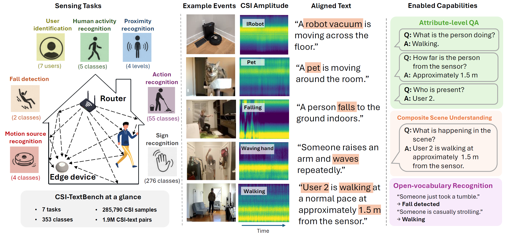

285,790
CSI samples
7
Sensing tasks
353
Classes
~2.0M
CSI–text pairs
86.9%
Joint scene top-1
Indoor context from ambient sensing supports assisted living, smart buildings, and broader ambient intelligence, yet WiFi CSI lacks naturally co-occurring text unlike vision or speech. CSI-TextBench is the first large-scale dataset and benchmark for CSI–language alignment: three public benchmarks unified into hierarchical natural-language descriptions, enabling contrastive alignment that matches supervised classifiers without class labels, few-shot transfer to unseen classes, open-vocabulary prompts, and compositional scene understanding from a single embedding space.

CSI-TextBench pairs diverse WiFi CSI recordings (including large-scale in-the-wild data) with hierarchical natural-language descriptions, supporting CSI–language alignment, open-vocabulary queries, attribute-level QA, and compositional scene understanding over activity, proximity, and identity.
People spend much of their time indoors; WiFi is already deployed, always on, and sensitive to motion through Channel State Information (CSI). Prior WiFi sensing work spans activity recognition, localization, fall detection, and user identification, but systems are typically tied to fixed label spaces, which limits flexible querying, reuse, and composition. Language alignment has made vision and audio queryable via shared embedding spaces—for CSI, the obstacle is data: existing datasets provide categorical labels, not paired natural language.
1. Large-scale CSI–language alignment
The first large-scale CSI–text resource unifying CSI-Bench, XRF55, and SignFi into 285,790 samples across 7 tasks, with 2,291 descriptions forming roughly 2.0M many-to-many pairs—learning from semantics rather than fixed labels alone.
2. Controlled alignment benchmarking
Five alignment methods across four paradigm families are evaluated under one dual-encoder design, showing CSI–language models can match or approach supervised performance while highlighting text design and class granularity as key factors.
3. Composable ambient perception
Protocols for zero-shot recognition, few-shot transfer, open-vocabulary prompting, and compositional QA show a single model can answer joint queries over activity, proximity, and identity—86.9% top-1 on 140 composite scenes, exceeding factorized per-attribute prediction.
Source datasets. CSI-Bench contributes five tasks (HAR, fall detection, motion source, proximity, user ID) from large-scale in-the-wild recordings across diverse commercial devices. XRF55 adds 55 fine-grained activities in controlled settings. SignFi contributes 276 sign-gesture classes at the finest semantic granularity. SignFi is released as preprocessing scripts and CSI–text registry files; raw CSI must be obtained from the original provider under its license.
Unified preprocessing. Sources differ in subcarriers, antennas, and sampling rates. Following the CSI-Bench pipeline, all inputs are standardized to an amplitude tensor X ∈ ℝC×K×T: amplitude only (discarding unstable phase), 5-second windows, per-sample normalization, and subcarrier alignment to fixed K. This reduces hardware-specific variation while preserving motion-induced dynamics.
Text construction. Because CSI has no natural textual counterpart, descriptions are generated from labels via task-aware templates with paraphrastic variation. A hierarchical scheme uses level-1 captions for the primary phenomenon (activity or gesture) and level-2 composite captions that combine attributes—for example, activity, proximity, and user identity—enabling multi-attribute scene alignment.
Signal-grounded semantics. Text is restricted to properties plausibly encoded in CSI—activity, gesture, proximity, motion source, and user-related behavior—while omitting deployment-specific attributes (e.g., exact device type or room identity) to limit spurious correlations.
Many-to-many structure. Each CSI sample is paired with roughly 4–9 descriptions; each text matches many samples. This dense many-to-many structure differs from typical vision–language data and stresses alignment objectives (e.g., in-batch “negatives” may share semantics with positives).
Task-level statistics
| Task | Source | Classes | CSI samples | Unique texts | Texts / sample | Total pairs |
|---|---|---|---|---|---|---|
| HAR | CSI-Bench | 5 | 55,684 | 221 | 9 | 501,156 |
| Proximity | CSI-Bench | 4 | 55,684 | 216 | 9 | 501,156 |
| User ID | CSI-Bench | 7 | 55,684 | 224 | 8 | 445,472 |
| Fall detection | CSI-Bench | 2 | 6,700 | 10 | 5 | 33,500 |
| Motion source | CSI-Bench | 4 | 60,858 | 20 | 5 | 304,290 |
| Sign recognition | SignFi | 276 | 8,280 | 1,380 | 5 | 41,400 |
| Action recognition | XRF55 | 55 | 42,900 | 220 | 4 | 171,600 |
| Total | 353 | 285,790 | 2,291 | 1,998,574 |
HAR, Proximity, and User ID share the same 55,684 underlying CSI-Bench recordings; 285,790 task-level instances correspond to 174,422 unique recordings. Pair counts follow Table 2 in the paper.
CSI–text alignment differs from image–text settings in three ways: dense many-to-many correspondence, no large-scale naturally paired text, and a sensing modality with distinct signal structure. All methods share a dual-encoder setup to isolate the alignment objective: a learned CSI encoder with projection maps CSI to zcsi ∈ ℝ256; a frozen pretrained text encoder (default: CLIP ViT-B/32) with projection yields ztext; embeddings are ℓ2-normalized before the loss.
The CSI encoder is a 1D-adapted ResNet-18 on input reshaped to [B, C·K, T]. Training uses AdamW, cosine schedule with warmup, batch size 128, and early stopping; 35 single-task models cover five objectives × seven tasks, plus multitask and supervised baselines as in the paper.
InfoNCE uses batch softmax contrastives (with false-negative pressure under shared semantics). SigLIP uses pairwise sigmoid losses suited to multiple positives. LanguageBind aligns CSI to a frozen text space with an asymmetric contrastive objective. Barlow Twins enforces cross-correlation consistency without explicit negatives. Masked prediction reconstructs text embeddings from partially masked CSI, probing structure beyond discrimination alone.
Zero-shot classification assigns the class whose mean text-prototype embedding best matches the CSI embedding. CLIP InfoNCE recovers within 0.3 points of the supervised baseline on HAR, motion source, and user ID, and within 2.4 points on 276-class SignFi—without any class labels. Cross-modal retrieval shows InfoNCE yields a globally well-structured space (e.g., strong R@5 / R@10 on XRF55 and SignFi), not only a sharp top-1.
On SignFi, train on 200 classes and hold out 76: zero-shot on held-out classes is limited (language alone cannot disambiguate unseen fine-grained signs), but 1-shot linear probing reaches 54.0% and 10-shot reaches 74.6%—a deployment path closed-set classifiers do not offer. Open-vocabulary HAR tests novel prompts: layperson phrasings match training-template accuracy (~96%), while specialist wording drops unless anchored to phrasing closer to CLIP’s pretraining—showing alignment to text, with coverage bounded by the text encoder prior.
A unified multitask CLIP InfoNCE model (seven tasks, proportional sampling, augmentations) retains ≥95% of single-task accuracy on six of seven tasks at inference via task-specific text prototypes only—no task heads. On CSI-Bench’s co-labeled subset, Level 2 composite retrieval over 140 joint configurations (5 activities × 4 proximities × 7 users) reaches 86.9% top-1, beating the ~70.4% joint accuracy from independent per-attribute QA—composite embeddings capture cross-attribute dependencies that factorized prediction misses.
| Method | HAR | Prox. | User ID | Fall | MotSrc | SignFi | XRF55 |
|---|---|---|---|---|---|---|---|
| CLIP InfoNCE | 97.8 | 94.6 | 100.0 | 94.2 | 99.5 | 97.0 | 77.5 |
| Supervised (same encoder) | 97.9 | 96.3 | 100.0 | 95.5 | 99.8 | 99.4 | 82.9 |
Mean ± std over seeds and full multi-method tables are in the paper (Tables 3–9).
| HAR | Proximity | User ID | Fall | MotSrc | SignFi | XRF55 |
|---|---|---|---|---|---|---|
| 96.0 | 84.5 | 100.0 | 95.9 | 98.2 | 96.1 | 79.2 |
| Joint / Top-1 | Top-3 | Top-5 | MRR |
|---|---|---|---|
| 86.9 | 96.9 | 98.2 | 0.919 |
Prior RF- and sensor-language efforts often focus on a single task or modality, or do not release reusable sample–text pairs at scale. CSI-TextBench complements this landscape as an open, multi-task WiFi CSI–text benchmark spanning controlled to in-the-wild settings, diverse hardware, and class counts from 2 to 276—with explicit evaluation of alignment objectives under many-to-many pairing.
CSI avoids identifiable video or audio, which can support privacy-sensitive assistive use cases (e.g., fall detection, smart-home automation) on existing infrastructure. Responsible deployment still requires consent, on-device or access-controlled processing, and clear policies. The benchmark builds on publicly available datasets collected under their respective approvals and licenses.
@misc{csi-textbench,
title = {CSI-TextBench: A Dataset and Benchmark for Language-Grounded Ambient Sensing Perception},
author = {Anonymous},
year = {2026}
}Replace the BibTeX entry with the camera-ready citation when available.